import matplotlib.pyplot as plt
x = [0, 7, 4, 5, 8, -9]
plt.plot(x)
plt.show()6 Matplotlib

Import
import matplotlib.pyplot as plt
import numpy as np
import pandas as pd6.1 Galerie wykresów
https://matplotlib.org/gallery/index.html
https://python-graph-gallery.com/
6.2 Wykres liniowy
Wykres liniowy jest stosowany, gdy chcemy przedstawić zmiany wartości w czasie lub w funkcji innej zmiennej. Wykres liniowy jest odpowiedni dla danych ciągłych, gdzie istnieje związek między punktami danych. Służy do ilustrowania trendów, wzorców i porównywania między różnymi zestawami danych.
Oto niektóre sytuacje, w których wykresy liniowe są stosowane:
- Prezentowanie zmian wartości w czasie, na przykład wzrostu gospodarczego, ceny akcji, zmiany temperatury itp.
- Ukazywanie związku między dwiema zmiennymi, np. związek między poziomem edukacji a zarobkami.
- Porównywanie trendów dla różnych grup lub kategorii, na przykład analiza sprzedaży różnych produktów w czasie.
- Analiza korelacji między zmiennymi, na przykład związek między rosnącymi cenami paliwa a spadkiem sprzedaży samochodów.
- Eksploracja danych, aby zrozumieć strukturę danych i znaleźć wzorce lub anomalie.
Wykresy liniowe są szczególnie przydatne, gdy mamy do czynienia z danymi ciągłymi, a relacje między punktami danych są istotne. Jednak mogą być również używane do prezentowania danych dyskretnych, o ile istnieje zrozumiały związek między punktami danych.
import matplotlib.pyplot as plt
import numpy as np
1x = np.linspace(0, 2, 100)
2plt.plot(x, x, label='linear')
3plt.plot(x, x ** 2, label='quadratic')
4plt.plot(x, x ** 3, label='cubic')
5plt.xlabel('x label')
6plt.ylabel('y label')
7plt.title("Simple Plot")
8plt.legend()
9plt.show()- 1
-
x = np.linspace(0, 2, 100): tworzy tablicęxz 100 równomiernie rozłożonymi wartościami od 0 do 2 (włącznie), korzystając z funkcjilinspacez bibliotekinumpy. - 2
-
plt.plot(x, x, label='linear'): rysuje liniowy wykres (y = x) z wartościami z tablicyx. - 3
-
plt.plot(x, x**2, label='quadratic'): rysuje wykres kwadratowy (y = x^2) z wartościami z tablicyx. - 4
-
plt.plot(x, x**3, label='cubic'): rysuje wykres sześcienny (y = x^3) z wartościami z tablicyx. - 5
-
plt.xlabel('x label'): dodaje etykietę osi X. - 6
-
plt.ylabel('y label'): dodaje etykietę osi Y. - 7
-
plt.title("Simple Plot"): nadaje tytuł wykresu “Simple Plot”. - 8
-
plt.legend(): dodaje legendę do wykresu, która pokazuje etykiety (label) dla poszczególnych linii. - 9
-
plt.show(): wyświetla wykres.
6.3 Parametry legendy
import matplotlib.pyplot as plt
import numpy as np
x = np.linspace(0, 2, 100)
plt.plot(x, x, label='linear')
plt.plot(x, x ** 2, label='quadratic')
plt.plot(x, x ** 3, label='cubic')
plt.xlabel('x label')
plt.ylabel('y label')
plt.title("Simple Plot")
plt.legend(loc = 5)
plt.show()6.4 Style, kolory linii
import numpy as np
import matplotlib.pyplot as plt
1x = np.arange(14)
2y = np.cos(5 * x)
3plt.plot(x, y + 2, 'blue', linestyle="-", label="niebieski")
4plt.plot(x, y + 1, 'red', linestyle=":", label="czerwony")
5plt.plot(x, y, 'green', linestyle="--", label="zielony")
plt.legend(title='Legenda:')
plt.show()- 1
-
x = np.arange(14): tworzy tablicęxz wartościami od 0 do 13 (łącznie z 13), korzystając z funkcjiarangez bibliotekinumpy. - 2
-
y = np.cos(5 * x): oblicza wartości funkcji cosinus dla każdej wartościx, przemnożonej przez 5. Wynikowe wartości są zapisane w tablicyy. - 3
-
plt.plot(x, y + 2, 'blue', linestyle="-", label="niebieski"): rysuje niebieski wykres z wartościami z tablicyx, a wartościyprzesunięte o 2 w górę. Linia jest ciągła (linestyle="-"). - 4
-
plt.plot(x, y + 1, 'red', linestyle=":", label="czerwony"): rysuje czerwony wykres z wartościami z tablicyx, a wartościyprzesunięte o 1 w górę. Linia jest punktowana (linestyle=":"). - 5
-
plt.plot(x, y, 'green', linestyle="--", label="zielony"): rysuje zielony wykres z wartościami z tablicyxi wartościamiy. Linia jest przerywana (linestyle="--").
6.5 Wykresy jako obiekty
import matplotlib.pyplot as plt
import numpy as np
1x = np.arange(0, 10, 0.2)
2y = np.sin(x)
3fig, ax = plt.subplots()
4ax.plot(x, y)
5plt.show()- 1
-
x = np.arange(0, 10, 0.2): tworzy tablicęxz wartościami od 0 do 10 (bez 10) z krokiem 0.2, korzystając z funkcjiarangez bibliotekinumpy. - 2
-
y = np.sin(x): oblicza wartości funkcji sinus dla każdej wartościx. Wynikowe wartości są zapisane w tablicyy. - 3
-
fig, ax = plt.subplots(): tworzy nową figurę (fig) i osie (ax) za pomocą funkcjisubplotsz bibliotekimatplotlib.pyplot. Figura to obiekt zawierający wszystkie elementy wykresu, takie jak osie, linie wykresu, tekst itp. Osie to obiekt, który definiuje układ współrzędnych, na którym rysowany jest wykres. - 4
-
ax.plot(x, y): rysuje wykres wartościyw funkcjixna osiachaxutworzonych wcześniej. - 5
-
plt.show(): wyświetla wykres.
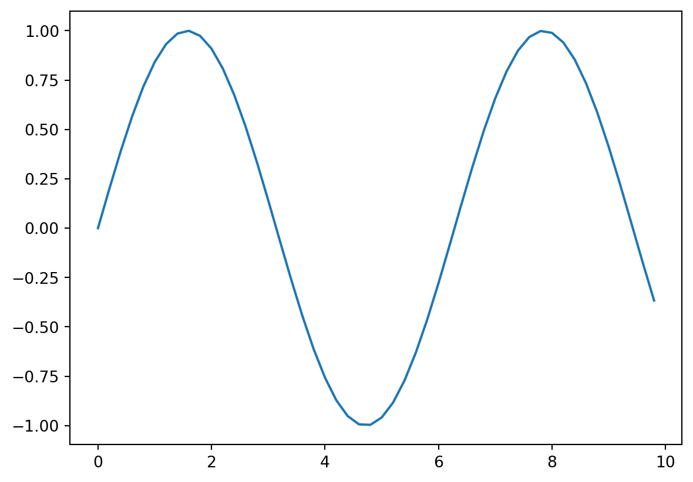
6.6 Wykres liniowy i punktowy
Wykres punktowy (scatter plot) jest stosowany, gdy chcemy przedstawić związek między dwiema zmiennymi lub rozkład punktów danych w przestrzeni dwuwymiarowej. Wykres punktowy jest odpowiedni dla danych zarówno ciągłych, jak i dyskretnych, gdy chcemy zobrazować wzory, korelację lub związki między zmiennymi.
Oto niektóre sytuacje, w których wykresy punktowe są stosowane:
- Analiza korelacji między dwiema zmiennymi, na przykład związek między wiekiem a dochodem.
- Prezentowanie rozkładu punktów danych, na przykład wykazanie geograficznego rozmieszczenia sklepów w mieście.
- Eksploracja danych, aby zrozumieć strukturę danych i znaleźć wzorce, grupy lub anomalie, na przykład w celu identyfikacji skupisk danych w analizie skupień (clustering).
- Wykrywanie wartości odstających (outliers) w danych, na przykład dla wykrywania nietypowych obserwacji w zbiorze danych.
- Porównywanie różnych grup lub kategorii danych, na przykład porównanie wzrostu gospodarczego różnych krajów względem ich długu publicznego.
Wykresy punktowe są szczególnie przydatne, gdy mamy do czynienia z danymi o różnym charakterze (ciągłe lub dyskretne) oraz gdy chcemy zbadać korelację, grupy, wzorce lub wartości odstające.
import matplotlib.pyplot as plt
1fig = plt.figure()
2ax = fig.add_subplot(111)
3ax.plot([1, 2, 3, 4], [10, 20, 25, 30], color='lightblue', linewidth=3)
4ax.scatter([0.3, 3.8, 1.2, 2.5], [11, 25, 9, 26], color='darkgreen', marker='^')
5ax.set_xlim(0.5, 4.5)
plt.show()- 1
-
fig = plt.figure(): tworzy nową figurę (fig). Figura to obiekt zawierający wszystkie elementy wykresu, takie jak osie, linie wykresu, tekst itp. - 2
-
ax = fig.add_subplot(111): dodaje nowy zestaw osi (ax) do figuryfigza pomocą metodyadd_subplot. Argument111oznacza, że chcemy stworzyć siatkę 1x1 i umieścić nasz wykres na pierwszym (i jedynym) polu tej siatki. - 3
-
ax.plot([1, 2, 3, 4], [10, 20, 25, 30], color='lightblue', linewidth=3): rysuje niebieski wykres liniowy o szerokości linii równej 3 na osiachax, używając listy wartości[1, 2, 3, 4]dla osi X i[10, 20, 25, 30]dla osi Y. - 4
-
ax.scatter([0.3, 3.8, 1.2, 2.5], [11, 25, 9, 26], color='darkgreen', marker='^'): dodaje punkty w kształcie trójkątów (‘^’) na osiachaxw miejscach określonych przez listy wartości[0.3, 3.8, 1.2, 2.5]dla osi X i[11, 25, 9, 26]dla osi Y. Punkty są w kolorze ciemnozielonym. - 5
-
ax.set_xlim(0.5, 4.5): ustawia zakres wartości osi X na osiachaxod 0.5 do 4.5.
import matplotlib.pyplot as plt
house_prices = [230000, 350000, 480000, 280000, 420000, 610000, 390000, 580000]
square_meters = [90, 140, 210, 100, 170, 260, 150, 240]
1plt.scatter(square_meters, house_prices, color='blue', marker='o')
plt.xlabel('Metraż [m2]')
plt.ylabel('Cena domu [PLN]')
plt.title('Związek między metrażem a ceną domu')
plt.show()- 1
-
plt.scatter(square_meters, house_prices, color='blue', marker='o'): tworzy wykres punktowy (scatter plot) z metrażem domów na osi X (square_meters) i cenami domów na osi Y (house_prices). Punkty są koloru niebieskiego (color='blue') i mają kształt kółka (marker='o').
from matplotlib import pyplot as plt
x = [1, -3, 4, 5, 6]
y = [2, 6, -4, 1, 2]
area = [70, 60, 1, 50, 2]
1plt.scatter(x, y, marker=">", color="brown", alpha=0.5, s=area)
plt.show()- 1
-
Kod
plt.scatter(x, y, marker=">", color="brown", alpha=0.5, s=area)tworzy wykres punktowy (scatter plot)x: lista lub tablica współrzędnych x punktów na wykresie.y: lista lub tablica współrzędnych y punktów na wykresie. Wartościxiymuszą mieć tę samą długość, aby przedstawić każdy punkt na wykresie.marker: symbol reprezentujący kształt punktów na wykresie. W tym przypadku, używamy">"co oznacza strzałkę skierowaną w prawo.color: kolor punktów na wykresie. W tym przypadku, używamy koloru “brown” (brązowy).alpha: przezroczystość punktów na wykresie, gdzie wartość1oznacza całkowitą nieprzezroczystość, a0całkowitą przezroczystość. W tym przypadku, używamy wartości0.5co oznacza półprzezroczystość punktów.s: rozmiar punktów na wykresie, który może być pojedynczą wartością lub listą/tablicą wartości o długości takiej samej jak współrzędnexiy.
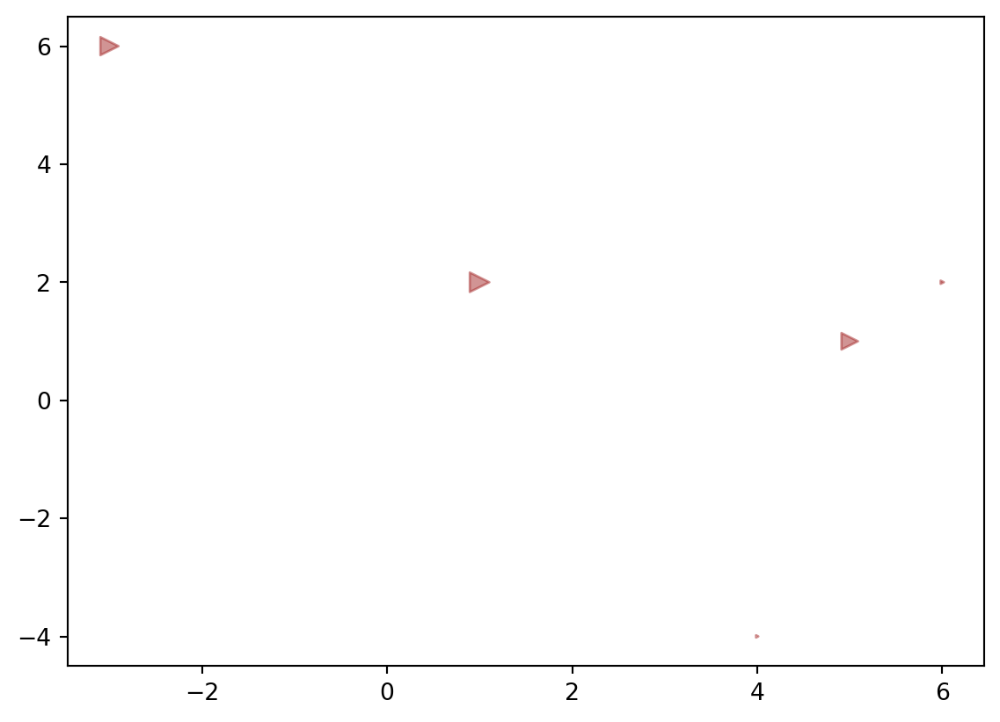
import numpy as np
import matplotlib.pyplot as plt
# Fixing random state for reproducibility
np.random.seed(19680801)
N = 50
x = np.random.rand(N)
y = np.random.rand(N)
colors = np.random.rand(N)
area = (30 * np.random.rand(N)) ** 2 # 0 to 15 point radii
plt.scatter(x, y, s=area, c=colors, alpha=0.5)
plt.show()6.7 Kolory
- https://matplotlib.org/stable/gallery/color/named_colors.html
- https://pl.wikipedia.org/wiki/Lista_kolor%C3%B3w
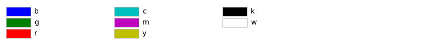
import numpy as np
import matplotlib.pyplot as plt
x = np.random.rand(50)
y = np.random.rand(50)
z = np.random.rand(50)
1plt.scatter(x, y, c=z, cmap='viridis')
2plt.colorbar()
plt.xlabel('Oś X')
plt.ylabel('Oś Y')
plt.title('Mapa kolorów dla wykresu punktowego')
plt.show()- 1
-
plt.scatter(x, y, c=z, cmap='viridis'): ta linia tworzy wykres punktowy (scatter plot) z danymix,yiz.xiyto dane, które będą wyświetlane na osi X i Y, azto dane, które będą używane do stworzenia mapy kolorów. Argumentcmap='viridis'określa mapę kolorów, która będzie użyta do przypisania kolorów do wartości numerycznych. - 2
-
plt.colorbar(): ta linia dodaje pasek kolorów do wykresu punktowego. Pasek kolorów wskazuje, które kolory odpowiadają wartościom numerycznym na mapie kolorów.
6.8 Mapy kolorów
Lista wbudowanych map kolorów: https://matplotlib.org/stable/tutorials/colors/colormaps.html
import numpy as np
import matplotlib.pyplot as plt
from matplotlib.colors import Normalize
# Przykładowe dane
x = np.random.rand(50)
y = np.random.rand(50)
z = np.random.rand(50) * 100
# Utworzenie mapy kolorów
norm = Normalize(vmin=0, vmax=100)
cmap = plt.cm.viridis
# Tworzenie wykresu punktowego z mapą kolorów
plt.scatter(x, y, c=z, cmap=cmap, norm=norm)
plt.colorbar()
# Dodanie etykiet osi
plt.xlabel('Oś X')
plt.ylabel('Oś Y')
plt.title('Mapa kolorów dla wykresu punktowego')
# Wyświetlenie wykresu
plt.show()6.9 Markery
https://matplotlib.org/stable/api/markers_api.html
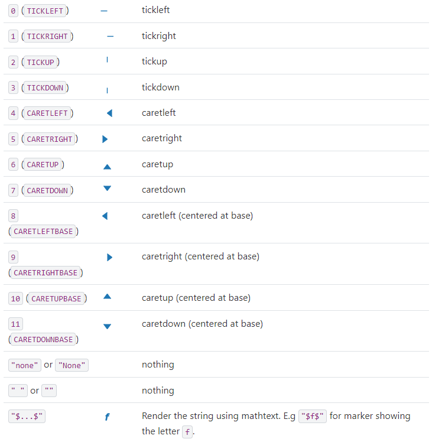
import matplotlib.pyplot as plt
1plt.plot([1, 2, 3, 4], [10, 20, 25, 30], color='lightblue', linewidth=3)
2plt.scatter([0.3, 3.8, 1.2, 2.5], [11, 25, 9, 26], color='darkgreen', marker='^')
3plt.xlim(0.5, 4.5)
plt.show()- 1
-
plt.plot([1, 2, 3, 4], [10, 20, 25, 30], color='lightblue', linewidth=3)- Tworzy wykres liniowy z podanymi współrzędnymi punktów (1, 10), (2, 20), (3, 25) i (4, 30). Kolor linii to jasnoniebieski (lightblue), a jej grubość wynosi 3. - 2
-
plt.scatter([0.3, 3.8, 1.2, 2.5], [11, 25, 9, 26], color='darkgreen', marker='^')- Tworzy wykres punktowy z podanymi współrzędnymi punktów (0.3, 11), (3.8, 25), (1.2, 9) i (2.5, 26). - Kolor punktów to ciemnozielony (darkgreen), a ich kształt to trójkąty wypełnione w górę (^). - 3
-
plt.xlim(0.5, 4.5)- Ustala zakres wartości na osi X, zaczynając od 0.5 do 4.5.

6.10 Zapis do pliku
- PNG (Portable Network Graphics) - plik rasterowy, popularny format do zapisywania obrazów w Internecie.
- JPEG (Joint Photographic Experts Group) - plik rasterowy, popularny format do zapisywania obrazów fotograficznych.
- SVG (Scalable Vector Graphics) - plik wektorowy, dobrze skalujący się i zachowujący jakość na różnych rozdzielczościach.
- PDF (Portable Document Format) - format dokumentów wektorowych, popularny w druku i przeglądaniu dokumentów.
- EPS (Encapsulated PostScript) - plik wektorowy, często używany w publikacjach naukowych i materiałach drukowanych.
- TIFF (Tagged Image File Format) - plik rasterowy, popularny w profesjonalnym druku i grafice.
- WebP to nowoczesny format obrazów opracowany przez Google, który oferuje lepszą kompresję oraz niższe straty jakości w porównaniu do popularnych formatów JPEG i PNG, co przyczynia się do szybszego ładowania stron internetowych i oszczędności transferu danych.
import numpy as np
import matplotlib.pyplot as plt
x = np.arange(0, 10)
y = x ^ 2
# Labeling the Axes and Title
plt.title("Graph Drawing")
plt.xlabel("Time")
plt.ylabel("Distance")
# Formatting the line colors
plt.plot(x, y, 'r')
# Formatting the line type
plt.plot(x, y, '>')
# save in pdf formats
plt.savefig('timevsdist.pdf', format='pdf')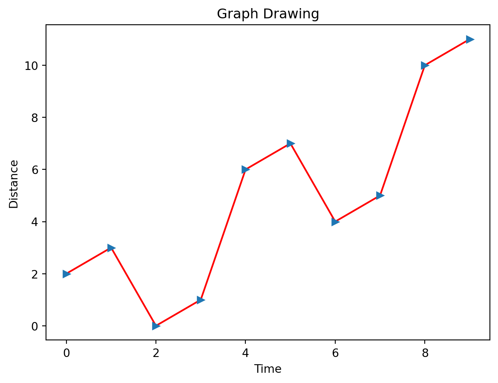
6.11 Linie poziome i pionowe
Funkcje axhline i axvline służą do dodawania poziomych (horyzontalnych) i pionowych (wertykalnych) linii do wykresu, odpowiednio.
axhline rysuje horyzontalną linię przechodzącą przez określoną wartość na osi Y, niezależnie od wartości na osi X. Składnia funkcji to axhline(y, xmin, xmax, **kwargs), gdzie:
y- wartość na osi Y, przez którą przechodzi linia (domyślnie 0)xmin,xmax- wartości z zakresu 0-1 określające początek i koniec linii na osi X (domyślnie 0 i 1)**kwargs- dodatkowe argumenty, takie jakcolor,linewidthczylinestyle, służące do kontrolowania wyglądu linii
axvline rysuje pionową linię przechodzącą przez określoną wartość na osi X, niezależnie od wartości na osi Y. Składnia funkcji to axvline(x, ymin, ymax, **kwargs), gdzie:
x- wartość na osi X, przez którą przechodzi linia (domyślnie 0)ymin,ymax- wartości z zakresu 0-1 określające początek i koniec linii na osi Y (domyślnie 0 i 1)**kwargs- dodatkowe argumenty, takie jakcolor,linewidthczylinestyle, służące do kontrolowania wyglądu linii
import matplotlib.pyplot as plt
plt.plot([0, 5], [0, 5], color='blue')
plt.axhline(2, color='red', linewidth=2) # Horyzontalna linia przechodząca przez Y=2
plt.axvline(3, color='green', linestyle='--') # Pionowa linia przechodząca przez X=3, styl linii przerywany
plt.show()W powyższym przykładzie, axhline rysuje czerwoną linię horyzontalną przechodzącą przez wartość 2 na osi Y, natomiast axvline rysuje zieloną przerywaną linię pionową przechodzącą przez wartość 3 na osi X.
import numpy as np
import matplotlib.pyplot as plt
x = np.arange(-5, 5, 0.1)
x1 = x[x < 0]
y1 = 1 / x1
plt.plot(x1, y1)
x2 = x[x > 0]
y2 = 1 / x2
plt.plot(x2, y2)
plt.ylim(-10, 10)
plt.axhline(y=0, linestyle="--")
plt.axvline(x=0, linestyle=":")
plt.show()6.12 Adnotacje (tekst) na wykresie
Funkcja annotate służy do dodawania adnotacji (tekstu i strzałek) na wykresie w celu wyróżnienia lub zaznaczenia określonych punktów czy obszarów.
Składnia funkcji to annotate(text, xy, xytext, arrowprops, **kwargs), gdzie:
text- ciąg znaków reprezentujący tekst adnotacji.xy- krotka (x, y) określająca współrzędne punktu, do którego odnosimy się w adnotacji.xytext- krotka (x, y) określająca współrzędne, w których tekst adnotacji powinien się zacząć. Jeśli nie podano, tekst zostanie wyświetlony bezpośrednio przy współrzędnychxy.arrowprops- słownik zawierający opcje rysowania strzałki, takie jakarrowstyle,colorczylinewidth. Jeśli nie podano, strzałka nie zostanie narysowana.**kwargs- dodatkowe argumenty dotyczące formatowania tekstu, takie jakfontsize,colorczyfontweight.
import matplotlib.pyplot as plt
plt.plot([1, 2, 3, 4], [2, 4, 9, 16], marker='o', linestyle='-', color='blue')
plt.xlabel('X-axis')
plt.ylabel('Y-axis')
plt.annotate('Ważny punkt (2, 4)',
xy=(2, 4), # Współrzędne punktu do zaznaczenia
xytext=(2.5, 6), # Współrzędne początku tekstu
arrowprops=dict(facecolor='red'), # Właściwości strzałki (kolor)
fontsize=12, # Rozmiar czcionki
color='blue', # Kolor tekstu
fontweight='bold') # Grubość czcionki
plt.show()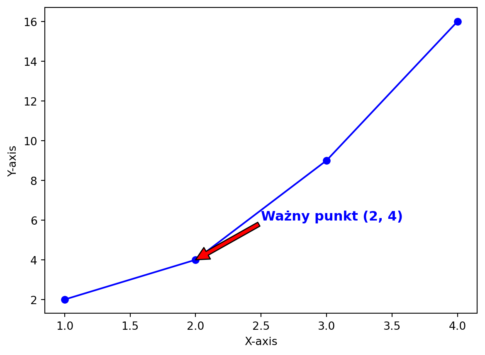
Jeśli chcesz dodać adnotację tylko z tekstem, składnia funkcji to annotate(text, xy, **kwargs), gdzie:
text- ciąg znaków reprezentujący tekst adnotacji.xy- krotka (x, y) określająca współrzędne, w których tekst adnotacji powinien się zacząć.**kwargs- dodatkowe argumenty dotyczące formatowania tekstu, takie jakfontsize,color,fontweightczyhorizontalalignment.
import matplotlib.pyplot as plt
plt.plot([1, 2, 3, 4], [2, 4, 9, 16], marker='o', linestyle='-', color='blue')
plt.xlabel('X-axis')
plt.ylabel('Y-axis')
plt.annotate('Ważny punkt (2, 4)',
xy=(2, 4), # Współrzędne początku tekstu
fontsize=12, # Rozmiar czcionki
color='blue', # Kolor tekstu
fontweight='bold', # Grubość czcionki
horizontalalignment='right') # Wyrównanie tekstu do prawej strony
plt.show()6.13 Etykiety osi
Funkcje xlabel i ylabel łużą do dodawania etykiet osi X i Y na wykresie, odpowiednio. Etykiety osi pomagają w lepszym zrozumieniu prezentowanych danych, wskazując, jakie wartości są reprezentowane na poszczególnych osiach.
Składnia funkcji to xlabel(label, **kwargs) lub ylabel(label, **kwargs), gdzie:
label- ciąg znaków reprezentujący tekst etykiety osi.**kwargs- dodatkowe argumenty dotyczące formatowania etykiety, takie jakfontsize,color,fontweightczyhorizontalalignment.
import matplotlib.pyplot as plt
x = [1, 2, 3, 4]
y = [2, 4, 6, 8]
plt.plot(x, y, marker='o', linestyle='-', color='blue')
plt.xlabel('Oś X', fontsize=12, color='red', fontweight='bold')
plt.ylabel('Oś Y', fontsize=12, color='green', fontweight='bold')
plt.show()
Funkcja annotate pozwala na użycie składni LaTeX w tekście adnotacji, co jest szczególnie przydatne, gdy chcemy dodać na wykresie równania matematyczne lub symbole. Aby użyć składni LaTeX, należy umieścić tekst w znacznikach dolara ($).
import matplotlib.pyplot as plt
import numpy as np
x = np.linspace(0, 2 * np.pi, 100)
y = np.sin(x)
plt.plot(x, y)
plt.xlabel('x')
plt.ylabel('sin(x)')
# Adnotacja z tekstem w składni LaTeX
plt.annotate(r'$\sin(\frac{2\pi}{3})=\frac{\sqrt{3}}{2}$',
xy=(2 * np.pi / 3, np.sqrt(3) / 2), # Współrzędne punktu do zaznaczenia
xytext=(3, 1.0), # Współrzędne początku tekstu
fontsize=12, # Rozmiar czcionki
arrowprops=dict(facecolor='red'), # Właściwości strzałki (kolor)
bbox=dict(facecolor='white')) # Ramka wokół tekstu (kolor tła)
plt.show()6.14 Etykiety podziałki osi
Funkcje xticks i yticks służą do manipulowania etykietami osi X i Y oraz wartościami na osi, odpowiednio. Pozwalają na kontrolowanie wyświetlania etykiet, odstępów między nimi oraz formatowania.
xticks manipuluje etykietami i wartościami na osi X, a yticks na osi Y. Składnia funkcji to xticks(ticks, labels, **kwargs) lub yticks(ticks, labels, **kwargs), gdzie:
ticks- lista wartości, dla których mają być umieszczone etykiety na osi. Jeśli nie podano, pozostają aktualne wartości.labels- lista ciągów znaków, które mają być użyte jako etykiety dla wartości z listyticks. Jeśli nie podano, zostaną użyte domyślne etykiety.**kwargs- dodatkowe argumenty dotyczące formatowania etykiet, takie jakfontsize,color,fontweightczyrotation.
import matplotlib.pyplot as plt
import numpy as np
x = np.arange(0, 10, 0.1)
y = np.sin(x)
plt.plot(x, y)
xtick_vals = [0, np.pi, 2 * np.pi, 3 * np.pi]
xtick_labels = ['0', r'$\pi$', r'$2\pi$', r'$3\pi$']
ytick_vals = [-1, -0.5, 0, 0.5, 1]
ytick_labels = ['-1', '-1/2', '0', '1/2', '1']
plt.xticks(xtick_vals, xtick_labels, fontsize=12, color='red')
plt.yticks(ytick_vals, ytick_labels, fontsize=12, rotation=45)
plt.show()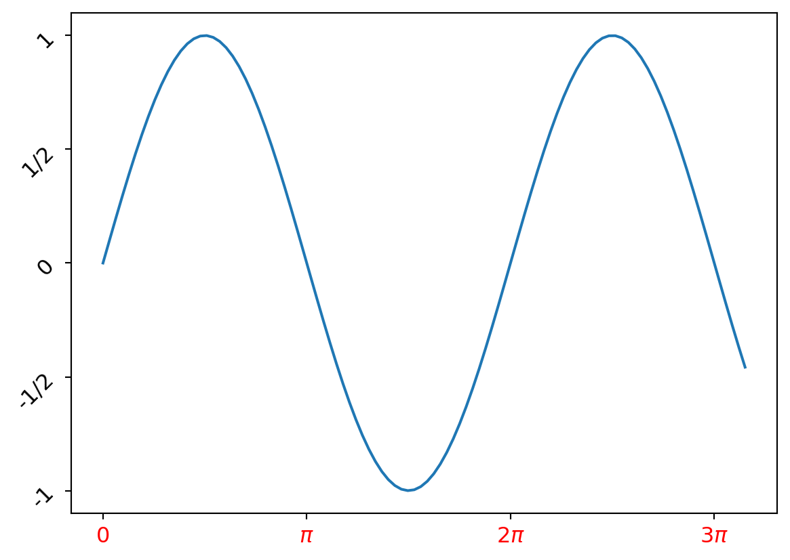
import numpy as np
import matplotlib.pyplot as plt
x = np.arange(-3, 3, 0.1)
y = x ** 2 + 2 * x
plt.plot(x, y)
plt.annotate(xy=(-1, 5), text="cos tam")
plt.xticks([-2, 1, 2], color="red")
plt.ylabel("abc", color="green")
plt.show()6.15 Wykres kołowy
Wykres kołowy (pie chart) jest stosowany, gdy chcemy przedstawić proporcje różnych kategorii lub segmentów w stosunku do całości. Jest szczególnie użyteczny, gdy mamy niewielką liczbę kategorii (zazwyczaj nie więcej niż 5-7) oraz gdy dane są jakościowe (kategoryczne). Wykres kołowy pozwala na wizualne zrozumienie udziałów procentowych poszczególnych kategorii w ramach całego zbioru danych.
Przykłady danych, dla których stosuje się wykres kołowy:
- Struktura wydatków domowych, gdzie kategorie to: mieszkanie, jedzenie, transport, rozrywka, inne.
- Procentowy udział w rynku różnych firm w danej branży.
- Rozkład głosów na partie polityczne w wyborach.
- Procentowy udział różnych rodzajów energii w produkcji energii elektrycznej (węgiel, gaz, energia odnawialna, energia jądrowa itp.).
Chociaż wykresy kołowe mają swoje zastosowania, są również krytykowane za ograniczoną precyzję w ocenie proporcji. Dlatego często zaleca się stosowanie innych rodzajów wykresów, takich jak słupkowe (bar chart) czy stosunkowe (stacked bar chart), które mogą być bardziej przejrzyste i precyzyjne w porównywaniu wartości między kategoriami.
Funkcja pie służy do tworzenia wykresów kołowych. Pozwala na wizualne przedstawienie proporcji różnych segmentów względem całości.
Składnia funkcji to plt.pie(x, explode=None, labels=None, colors=None, autopct=None, shadow=False, startangle=0, counterclock=True), gdzie:
x- lista wartości numerycznych, reprezentująca dane dla każdego segmentu. Funkcjapieautomatycznie obliczy procentowe udziały każdej wartości względem sumy wszystkich wartości.explode- lista wartości, które określają, czy (i jak bardzo) każdy segment ma być oddzielony od środka wykresu. Wartość 0 oznacza brak oddzielenia, a wartości większe oznaczają większe oddzielenie.labels- lista ciągów znaków, które będą używane jako etykiety segmentów.colors- lista kolorów dla poszczególnych segmentów.autopct- formatowanie procentów, które mają być wyświetlane na wykresie (np.'%1.1f%%').shadow- wartość logiczna (True/False), która określa, czy wykres ma mieć cień. Domyślnie ustawione naFalse.startangle- kąt początkowy wykresu kołowego, mierzony w stopniach przeciwnie do ruchu wskazówek zegara od osi X.counterclock- wartość logiczna (True/False), która określa, czy segmenty mają być rysowane zgodnie z ruchem wskazówek zegara. Domyślnie ustawione naTrue.

import matplotlib.pyplot as plt
# Dane
sizes = [20, 30, 40, 10]
labels = ['Kategoria A', 'Kategoria B', 'Kategoria C', 'Kategoria D']
colors = ['red', 'blue', 'green', 'yellow']
explode = (0, 0.1, 0, 0) # Wyróżnienie segmentu Kategoria B
# Tworzenie wykresu kołowego
plt.pie(sizes, explode=explode, labels=labels, colors=colors, autopct='%1.1f%%', shadow=True, startangle=90)
# Dodanie tytułu
plt.title('Przykład wykresu kołowego')
# Równomierne skalowanie osi X i Y, aby koło było okrągłe
plt.axis('equal')
plt.show()import matplotlib.pyplot as plt
# Pie chart, where the slices will be ordered and plotted counter-clockwise:
labels = ['Frogs', 'Hogs', 'Dogs', 'Logs']
sizes = [15, 30, 45, 10]
explode = [0, 0.1, 0, 0] # only "explode" the 2nd slice (i.e. 'Hogs')
fig1, ax1 = plt.subplots()
ax1.pie(sizes, explode=explode, labels=labels, autopct='%1.1f%%',
shadow=True, startangle=90)
ax1.axis('equal') # Equal aspect ratio ensures that pie is drawn as a circle.
plt.show()import matplotlib.pyplot as plt
# Pie chart, where the slices will be ordered and plotted counter-clockwise:
labels = ['Frogs', 'Hogs', 'Dogs', 'Logs']
sizes = [15, 30, 45, 10]
explode = [0, 0.1, 0, 0] # only "explode" the 2nd slice (i.e. 'Hogs')
plt.pie(sizes, explode=explode, labels=labels, autopct='%1.1f%%',
shadow=True, startangle=90)
plt.axis('equal')
plt.show()
import matplotlib.pyplot as plt
import numpy as np
# Dane
sizes = [20, 30, 40, 10]
labels = ['Kategoria A', 'Kategoria B', 'Kategoria C', 'Kategoria D']
n = len(sizes)
# Tworzenie mapy kolorów
cmap = plt.get_cmap('viridis')
colors = [cmap(i) for i in np.linspace(0, 1, n)]
# Tworzenie wykresu kołowego
plt.pie(sizes, labels=labels, colors=colors, autopct='%1.1f%%', startangle=90)
# Dodanie tytułu
plt.title('Przykład wykresu kołowego z mapą kolorów')
# Równomierne skalowanie osi X i Y, aby koło było okrągłe
plt.axis('equal')
plt.show()6.16 Podwykresy
Funkcja subplot pozwala na tworzenie wielu wykresów w pojedynczym oknie lub figurze. Dzięki temu można porównać różne wykresy, które mają wspólny kontekst lub prezentować różne aspekty danych.
Składnia funkcji to plt.subplot(nrows, ncols, index, **kwargs), gdzie:
nrows- liczba wierszy w siatce wykresów.ncols- liczba kolumn w siatce wykresów.index- indeks bieżącego wykresu, który ma być utworzony (indeksacja zaczyna się od 1). Indeksy są numerowane wierszami, tzn. kolejny wykres w rzędzie będzie miał indeks o jeden większy.**kwargs- dodatkowe argumenty dotyczące formatowania wykresu.
import matplotlib.pyplot as plt
import numpy as np
x = np.linspace(0, 2 * np.pi, 100)
# Tworzenie siatki wykresów 2x2
# Pierwszy wykres (w lewym górnym rogu)
plt.subplot(2, 2, 1)
plt.plot(x, np.sin(x))
plt.title('sin(x)')
# Drugi wykres (w prawym górnym rogu)
plt.subplot(2, 2, 2)
plt.plot(x, np.cos(x))
plt.title('cos(x)')
# Trzeci wykres (w lewym dolnym rogu)
plt.subplot(2, 2, 3)
plt.plot(x, np.tan(x))
plt.title('tan(x)')
# Czwarty wykres (w prawym dolnym rogu)
plt.subplot(2, 2, 4)
plt.plot(x, -np.sin(x))
plt.title('-sin(x)')
# Dopasowanie odstępów między wykresami
plt.tight_layout()
# Wyświetlenie wykresów
plt.show()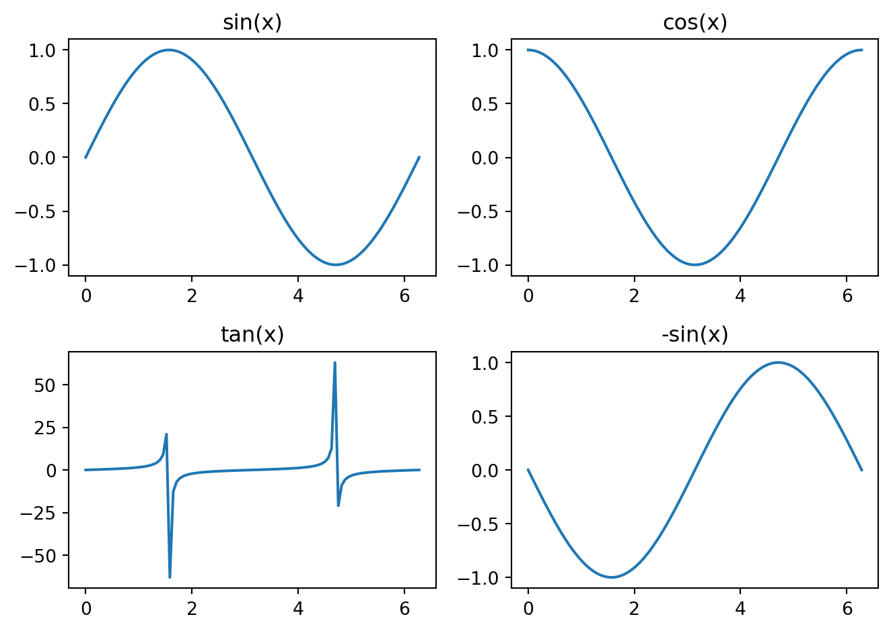
import numpy as np
import matplotlib.pyplot as plt
x = np.arange(0, 3, 0.1)
plt.subplot(2, 2, 1)
plt.plot(x, x)
plt.subplot(2, 2, 2)
plt.plot(x, x * 2)
plt.subplot(2, 2, 3)
plt.plot(x, x * x)
plt.subplot(2, 2, 4)
plt.plot(x, x ** 3)
plt.tight_layout()
plt.show()6.17 Siatka
Funkcja grid pozwala na dodanie siatki na wykresie, co ułatwia ocenę wartości na osiach i ich porównywanie. Można kontrolować kolor, grubość i styl linii siatki, a także określać, które osie mają mieć siatkę.
Składnia funkcji to plt.grid(b=None, which='major', axis='both', **kwargs), gdzie:
b- wartość logiczna (True/False), która określa, czy siatka ma być wyświetlana. Domyślnie ustawione naNone, co oznacza, że Matplotlib automatycznie określa, czy siatka powinna być wyświetlana na podstawie konfiguracji.which- określa, które linie siatki mają być wyświetlane: ‘major’ (tylko linie siatki dla głównych podziałek), ‘minor’ (linie siatki dla podziałek pomocniczych), lub ‘both’ (domyślnie - linie siatki dla obu rodzajów podziałek).axis- określa, które osie mają mieć siatkę: ‘both’ (obie osie), ‘x’ (tylko oś X), lub ‘y’ (tylko oś Y).**kwargs- dodatkowe argumenty dotyczące formatowania siatki.
import matplotlib.pyplot as plt
import numpy as np
x = np.linspace(0, 2 * np.pi, 100)
y = np.sin(x)
# Tworzenie wykresu
plt.plot(x, y, color='blue', linewidth=2)
# Dodanie siatki
plt.grid(True, which='both', color='gray', linewidth=0.5, linestyle='--')
# Dodanie tytułu i etykiet osi
plt.title('Wykres funkcji sin(x)')
plt.xlabel('x')
plt.ylabel('sin(x)')
# Wyświetlenie wykresu
plt.show()import matplotlib.pyplot as plt
import numpy as np
x = np.linspace(0, np.pi * 2, 100)
plt.subplot(3, 1, 1)
plt.plot(x, np.sin(x), 'r')
plt.grid(True)
plt.xlim(0, np.pi * 2)
plt.subplot(3, 1, 2)
plt.plot(x, np.cos(x), 'g')
plt.grid(True)
plt.xlim(0, np.pi * 2)
plt.subplot(3, 1, 3)
plt.plot(x, np.sin(x), 'r', x, np.cos(x), 'g')
plt.grid(True)
plt.xlim(0, np.pi * 2)
plt.tight_layout()
plt.savefig("fig3.png", dpi=72)
plt.show()6.18 Wykres dwuosiowy
Funkcja twinx w bibliotece Matplotlib pozwala na utworzenie drugiej osi Y, która będzie współdzielić oś X z pierwszą osią Y. Dzięki temu, można w prosty sposób przedstawić dwie serie danych, które są mierzne w różnych jednostkach, ale mają wspólną zmienną niezależną.
Składnia funkcji to twinx(ax=None, **kwargs), gdzie:
ax- obiekt Axes, który ma być użyty do tworzenia nowej osi Y. Domyślnie ustawione naNone, co oznacza, że będzie tworzona nowa osie Y.**kwargs- dodatkowe argumenty dotyczące formatowania nowej osi Y.
import numpy as np
import matplotlib.pyplot as plt
fig, ax1 = plt.subplots()
x = np.arange(0.01, 10.0, 0.01)
y = x ** 2
ax1.plot(x, y, 'r')
ax2 = ax1.twinx()
y2 = np.sin(x)
ax2.plot(x, y2)
fig.tight_layout()
plt.show()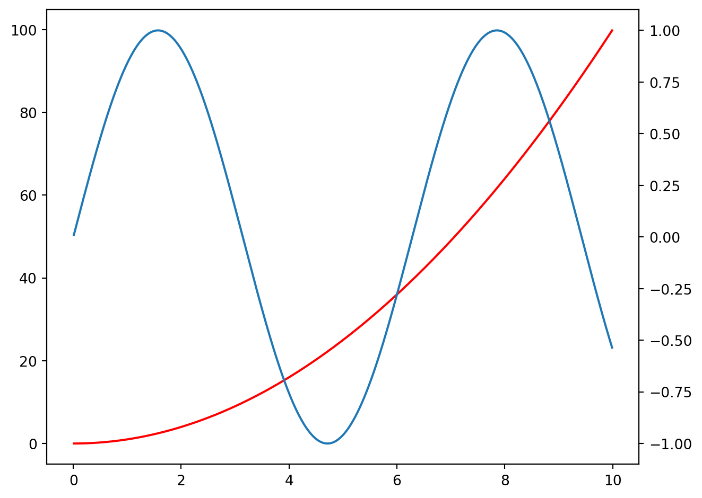
import numpy as np
import matplotlib.pyplot as plt
fig, ax1 = plt.subplots()
t = np.arange(0.01, 10.0, 0.01)
s1 = np.exp(t)
ax1.plot(t, s1, 'b-')
ax1.set_xlabel('time (s)')
ax1.set_ylabel('exp', color='b')
ax1.tick_params('y', colors='b')
ax2 = ax1.twinx()
s2 = np.sin(2 * np.pi * t)
ax2.plot(t, s2, 'r.')
ax2.set_ylabel('sin', color='r')
ax2.tick_params('y', colors='r')
fig.tight_layout()
plt.show()6.19 Wykres słupkowy
Wykres słupkowy jest stosowany do przedstawiania danych kategorialnych lub dyskretnych. Jest to powszechnie używany rodzaj wykresu, który pomaga wizualnie porównać wartości lub ilości dla różnych kategorii. Oto kilka typów danych, dla których wykres słupkowy może być stosowany:
- Częstości: Wykres słupkowy jest używany do przedstawiania liczby wystąpień różnych kategorii, takich jak wyniki ankiety, preferencje konsumentów lub różne grupy ludności.
- Proporcje: Można go stosować do przedstawiania udziału procentowego poszczególnych kategorii w całości, np. udział rynkowy różnych firm, procentowe wyniki testów czy procentowy rozkład ludności według wieku.
- Wartości liczbowe: Wykres słupkowy może przedstawiać wartości liczbowe związane z różnymi kategoriami, np. sprzedaż produktów, przychody z różnych źródeł czy średnią temperaturę w różnych miastach.
- Danych szeregów czasowych: Wykres słupkowy może być również używany do przedstawiania danych szeregów czasowych w przypadku, gdy zmiany występują w regularnych odstępach czasu, np. roczna sprzedaż, miesięczne opady czy tygodniowe przychody.
Warto zauważyć, że wykresy słupkowe są odpowiednie, gdy mamy do czynienia z niewielką liczbą kategorii, ponieważ zbyt wiele słupków na wykresie może sprawić, że stanie się on trudny do interpretacji. W takich przypadkach warto rozważyć inne typy wykresów, takie jak wykres kołowy lub stosunkowy.
Funkcja bar w bibliotece Matplotlib służy do tworzenia wykresów słupkowych (bar chart). Wykresy słupkowe są często stosowane, gdy chcemy porównać wartości różnych kategorii.
Składnia funkcji to plt.bar(x, height, width=0.8, bottom=None, align='center', data=None, **kwargs), gdzie:
x- pozycje słupków na osi X. Może to być sekwencja wartości numerycznych lub lista etykiet, które będą umieszczone na osi X.height- wysokość słupków.width- szerokość słupków.bottom- położenie dolnej krawędzi słupków. Domyślnie ustawione naNone, co oznacza, że słupki zaczynają się od zera.align- sposób wyśrodkowania słupków wzdłuż osi X. Domyślnie ustawione na ‘center’.data- obiekt DataFrame, który zawiera dane do wykresu.**kwargs- dodatkowe argumenty dotyczące formatowania wykresu, takie jak kolor, przezroczystość, etykiety osi, tytuł i legendę.
import matplotlib.pyplot as plt
# Dane
kategorie = ['Kategoria 1', 'Kategoria 2', 'Kategoria 3']
wartosci = [10, 20, 15]
# Tworzenie wykresu słupkowego
plt.bar(kategorie, wartosci, color='green', alpha=0.5)
# Dodanie tytułu i etykiet osi
plt.title('Wykres słupkowy')
plt.xlabel('Kategorie')
plt.ylabel('Wartości')
# Wyświetlenie wykresu
plt.show()import numpy as np
import matplotlib.pyplot as plt
wys = [10, 15, 18, 22, 27]
x = np.arange(0, len(wys))
k = ["black", "red", "green", "yellow", "pink"]
plt.bar(x, wys, color=k, width=0.75)
etyk = ["Kategoria A", "Kategoria B", "Kategoria C", "Kategoria D", "Kategoria E"]
plt.xticks(x, etyk, rotation=45)
y2 = [20, 30, 40, 50, 60]
plt.plot(x, y2)
plt.title("tytulik")
plt.tight_layout()
plt.show()import numpy as np
import matplotlib.pyplot as plt
height = [3, 12, 5, 18, 45]
bars = ('A', 'B', 'C', 'D', 'E')
y_pos = np.arange(len(bars))
plt.bar(y_pos, height, color=['black', 'red', 'green', 'blue', 'cyan'])
plt.xticks(y_pos, bars)
plt.show()import numpy as np
import matplotlib.pyplot as plt
data = [[30, 25, 50, 20],
[40, 23, 51, 17],
[35, 22, 45, 19]]
X = np.arange(4)
plt.bar(X + 0.00, data[0], color='b', width=0.25, label="A")
plt.bar(X + 0.25, data[1], color='g', width=0.25, label="B")
plt.bar(X + 0.50, data[2], color='r', width=0.25, label="C")
labelsbar = np.arange(2015, 2019)
plt.xticks(X + 0.25, labelsbar)
plt.legend()
plt.show()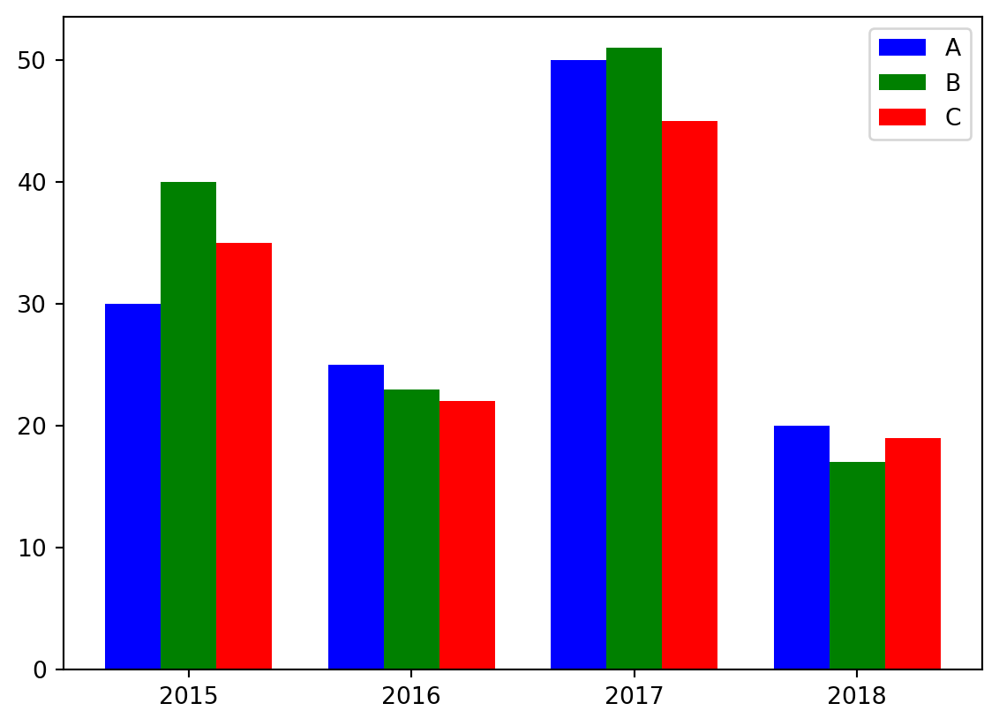
import numpy as np
import matplotlib.pyplot as plt
N = 5
boys = (20, 35, 30, 35, 27)
girls = (25, 32, 34, 20, 25)
ind = np.arange(N)
width = 0.35
plt.bar(ind, boys, width, label="boys")
plt.bar(ind, girls, width, bottom=boys, label="girls")
plt.ylabel('Contribution')
plt.title('Contribution by the teams')
plt.xticks(ind, ('T1', 'T2', 'T3', 'T4', 'T5'))
plt.yticks(np.arange(0, 81, 10))
plt.legend()
plt.show()
Funkcja barh służy do tworzenia wykresów słupkowych horyzontalnych (horizontal bar chart). Wykresy słupkowe horyzontalne są często stosowane, gdy chcemy porównać wartości różnych kategorii, a etykiety na osi X są długie lub są bardzo liczne.
Składnia funkcji to plt.barh(y, width, height=0.8, left=None, align='center', data=None, **kwargs), gdzie:
y- pozycje słupków na osi Y. Może to być sekwencja wartości numerycznych lub lista etykiet, które będą umieszczone na osi Y.width- szerokość słupków.height- wysokość słupków.left- położenie lewej krawędzi słupków. Domyślnie ustawione naNone, co oznacza, że słupki zaczynają się od zera.align- sposób wyśrodkowania słupków wzdłuż osi Y. Domyślnie ustawione na ‘center’.data- obiekt DataFrame, który zawiera dane do wykresu.**kwargs- dodatkowe argumenty dotyczące formatowania wykresu, takie jak kolor, przezroczystość, etykiety osi, tytuł i legenda.
import matplotlib.pyplot as plt
# Dane
kategorie = ['Kategoria 1', 'Kategoria 2', 'Kategoria 3']
wartosci = [10, 20, 15]
# Tworzenie wykresu słupkowego horyzontalnego
plt.barh(kategorie, wartosci, color='green', alpha=0.5)
# Dodanie tytułu i etykiet osi
plt.title('Wykres słupkowy horyzontalny')
plt.xlabel('Wartości')
plt.ylabel('Kategorie')
# Wyświetlenie wykresu
plt.show()
import numpy as np
import matplotlib.pyplot as plt
width = [3, 12, 5, 18, 45]
bars = ('A', 'B', 'C', 'D', 'E')
x_pos = np.arange(len(bars))
plt.barh(x_pos, width, color=['black', 'red', 'green', 'blue', 'cyan'])
plt.yticks(x_pos, bars)
plt.show()import numpy as np
import matplotlib.pyplot as plt
data = [[30, 25, 50, 20],
[40, 23, 51, 17],
[35, 22, 45, 19]]
Y = np.arange(4)
plt.barh(Y + 0.00, data[0], color='b', height=0.25, label="A")
plt.barh(Y + 0.25, data[1], color='g', height=0.25, label="B")
plt.barh(Y + 0.50, data[2], color='r', height=0.25, label="C")
labelsbar = np.arange(2015, 2019)
plt.yticks(Y + 0.25, labelsbar)
plt.legend()
plt.show()import numpy as np
import matplotlib.pyplot as plt
N = 5
boys = (20, 35, 30, 35, 27)
girls = (25, 32, 34, 20, 25)
ind = np.arange(N)
height = 0.35
plt.barh(ind, boys, height, label="boys")
plt.barh(ind, girls, height, left=boys, label="girls")
plt.xlabel('Contribution')
plt.title('Contribution by the teams')
plt.yticks(ind, ('T1', 'T2', 'T3', 'T4', 'T5'))
plt.xticks(np.arange(0, 81, 10))
plt.legend()
plt.show()import pandas as pd
import matplotlib.pyplot as plt
# Tworzenie przykładowej ramki danych
data = {
'Grupa': ['Grupa A', 'Grupa B', 'Grupa C', 'Grupa D'],
'Mężczyźni': [20, 35, 30, 35],
'Kobiety': [25, 32, 34, 20]
}
df = pd.DataFrame(data)
# Ustawienie indeksu na kolumnę 'Grupa'
df.set_index('Grupa', inplace=True)
# Tworzenie wykresu
ax = df.plot(kind='bar', width=0.8)
# Dodanie etykiet, tytułu i legendy
ax.set_ylabel('Wyniki')
ax.set_title('Wyniki według grup i płci')
ax.set_xticklabels(df.index, rotation=0)
ax.legend(title='Płeć')
plt.tight_layout()
plt.show()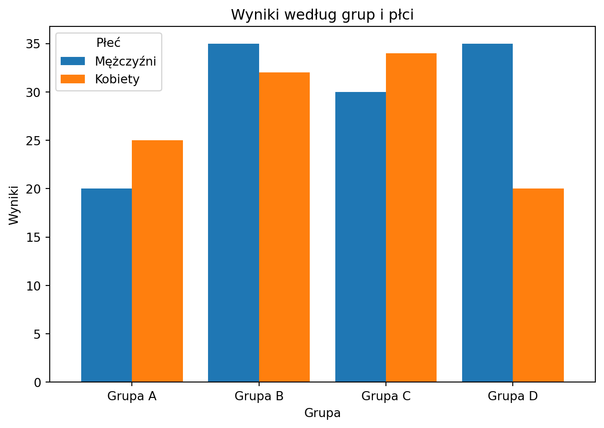
import pandas as pd
import matplotlib.pyplot as plt
import numpy as np
# Tworzenie przykładowej ramki danych
data = {
'Grupa': ['Grupa A', 'Grupa B', 'Grupa C', 'Grupa D'],
'Mężczyźni': [20, 35, 30, 35],
'Kobiety': [25, 32, 34, 20]
}
df = pd.DataFrame(data)
# Ustawienie indeksu na kolumnę 'Grupa'
df.set_index('Grupa', inplace=True)
# Tworzenie wykresu
fig, ax = plt.subplots()
# Słupki dla mężczyzn
rects1 = ax.bar(df.index, df['Mężczyźni'], label='Mężczyźni')
# Słupki dla kobiet, nałożone na słupki dla mężczyzn
rects2 = ax.bar(df.index, df['Kobiety'], bottom=df['Mężczyźni'], label='Kobiety')
# Dodanie etykiet, tytułu i legendy
ax.set_ylabel('Wyniki')
ax.set_title('Wyniki według grup i płci')
ax.legend()
plt.tight_layout()
plt.show()6.20 Wykres pudełkowy
Wykres pudełkowy (inaczej box plot) jest stosowany do przedstawiania informacji o rozkładzie danych liczbowych oraz do identyfikacji wartości odstających. Jest szczególnie przydatny w przypadku analizy danych ciągłych, które mają różne wartości i rozkłady. Oto kilka typów danych, dla których wykres pudełkowy może być stosowany:
Porównanie grup: Wykres pudełkowy jest używany do porównywania rozkładu danych między różnymi grupami. Na przykład, można go użyć do porównania wyników testów uczniów z różnych szkół, wynagrodzeń w różnych sektorach czy wartości sprzedaży różnych produktów.
Identyfikacja wartości odstających: Wykres pudełkowy jest używany do identyfikacji wartości odstających (outlierów) w danych, które mogą wskazywać na błędy pomiarowe, nietypowe obserwacje lub wartości ekstremalne. Na przykład, może to być użyte do wykrywania anomalii w danych meteorologicznych, wartościach giełdowych czy danych medycznych.
Analiza rozkładu: Wykres pudełkowy pomaga zrozumieć rozkład danych, takich jak mediana, kwartyle, zakres wartości i potencjalne wartości odstające. Może to być użyte w analizie danych takich jak oceny, wzrost ludności, wartość akcji czy ceny nieruchomości.
Wizualizacja wielowymiarowych danych: Wykres pudełkowy może być używany do wizualizacji wielowymiarowych danych, przedstawiając rozkład wielu zmiennych na jednym wykresie. Na przykład, można porównać zmienne takie jak wiek, zarobki i wykształcenie w badaniu demograficznym.
Warto zauważyć, że wykres pudełkowy jest szczególnie przydatny, gdy chcemy zrozumieć rozkład danych, ale nie pokazuje on konkretnej liczby obserwacji ani wartości indywidualnych punktów danych. W takich przypadkach inne rodzaje wykresów, takie jak wykres punktowy, mogą być bardziej odpowiednie.
Wykres pudełkowy pokazuje pięć statystyk opisowych danych: minimum, pierwszy kwartyl (Q1), medianę, trzeci kwartyl (Q3) i maksimum.
import matplotlib.pyplot as plt
import numpy as np
# Przykładowe dane
data = np.random.rand(100)
# Tworzenie wykresu
fig, ax = plt.subplots()
# Rysowanie boxplota
ax.boxplot(data)
# Dodanie opisów
ax.set_title('Boxplot')
ax.set_ylabel('Wartości')
ax.set_xticklabels(['Przykładowe dane'])
# Wyświetlanie wykresu
plt.show()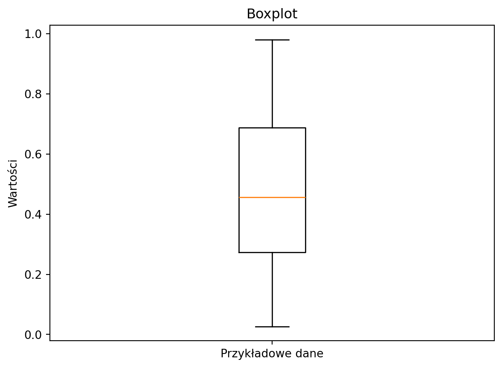

import matplotlib.pyplot as plt
import numpy as np
# Creating dataset
np.random.seed(10)
data = np.random.normal(100, 20, 200)
# Creating plot
plt.boxplot(data)
# show plot
plt.show()6.21 Histogram
Wykres histogramu jest stosowany do przedstawiania rozkładu danych liczbowych, zarówno ciągłych, jak i dyskretnych. Histogram pokazuje częstość występowania danych w określonych przedziałach (binach), co pozwala na analizę dystrybucji i identyfikację wzorców. Oto kilka typów danych, dla których histogram może być stosowany:
Analiza rozkładu: Histogram może być używany do analizy rozkładu danych, takich jak oceny, ceny, wartości akcji, wzrost ludności czy dane meteorologiczne. Pozwala to zrozumieć, jak dane są rozłożone, czy są skoncentrowane wokół pewnych wartości, czy mają długi ogon (tj. czy występują wartości odstające).
Identyfikacja tendencji: Histogram może pomóc w identyfikacji tendencji lub wzorców w danych. Na przykład, można użyć histogramu do identyfikacji sezonowych wzorców sprzedaży, zmian w wartościach giełdowych czy wzorców migracji ludności.
Porównanie grup: Histogram może być również używany do porównywania rozkładu danych między różnymi grupami. Na przykład, można go użyć do porównania wyników testów uczniów z różnych szkół, wynagrodzeń w różnych sektorach czy wartości sprzedaży różnych produktów.
Szacowanie parametrów: Histogram może pomóc w szacowaniu parametrów rozkładu, takich jak średnia, mediana czy wariancja, co może być użyteczne w analizie statystycznej.
Warto zauważyć, że histogram jest odpowiedni dla danych liczbowych, ale nie jest przeznaczony do przedstawiania danych kategorialnych. W takich przypadkach inne rodzaje wykresów, takie jak wykres słupkowy, mogą być bardziej odpowiednie.
import matplotlib.pyplot as plt
x = [1, 1, 2, 3, 3, 5, 7, 8, 9, 10,
10, 11, 11, 13, 13, 15, 16, 17, 18, 18]
plt.hist(x, bins=4)
plt.show()import pandas as pd
import matplotlib.pyplot as plt
ages = [20, 22, 25, 27, 21, 23, 37, 31, 61, 45, 41, 32]
bins = [18, 25, 35, 60, 100]
cats2 = pd.cut(ages, [18, 26, 36, 61, 100], right=False)
print(cats2)
group_names = ['Youth', 'YoungAdult',
'MiddleAged', 'Senior']
data = pd.cut(ages, bins, labels=group_names)
plt.hist(data)
plt.show()[[18, 26), [18, 26), [18, 26), [26, 36), [18, 26), ..., [26, 36), [61, 100), [36, 61), [36, 61), [26, 36)]
Length: 12
Categories (4, interval[int64, left]): [[18, 26) < [26, 36) < [36, 61) < [61, 100)]import matplotlib.pyplot as plt
ages = [20, 22, 25, 27, 21, 23, 37, 31, 61, 45, 41, 32]
bins = [18, 25, 35, 60, 100]
plt.hist(ages, bins=bins)
plt.show()import matplotlib.pyplot as plt
x = [1, 1, 2, 3, 3, 5, 7, 8, 9, 10,
10, 11, 11, 13, 13, 15, 14, 12, 18, 18]
plt.hist(x, bins=[0, 5, 10, 15, 20])
plt.xticks([0, 5, 10, 15, 20])
plt.show()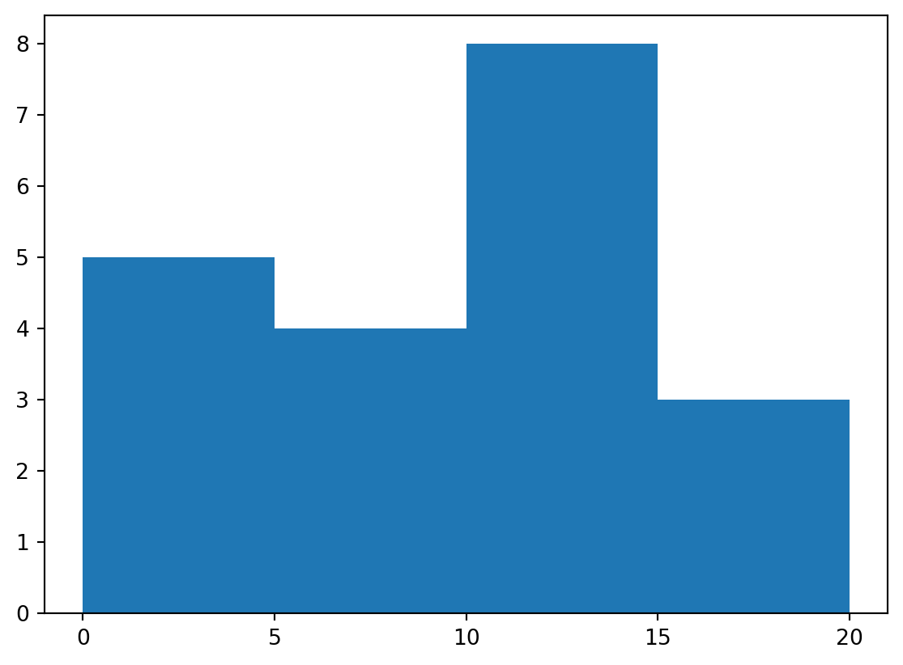
import matplotlib.pyplot as plt
x = [1, 1, 2, 3, 3, 5, 7, 8, 9, 10,
10, 11, 11, 13, 13, 15, 14, 12, 18, 18]
plt.hist(x, bins=[0, 5, 10, 15, 20], cumulative=True)
plt.xticks([0, 5, 10, 15, 20])
plt.show()import matplotlib.pyplot as plt
x = [1, 1, 2, 3, 3, 5, 7, 8, 9, 10,
10, 11, 11, 13, 13, 15, 14, 12, 18, 18]
plt.hist(x, bins=[0, 5, 10, 15, 20], density=True)
plt.xticks([0, 5, 10, 15, 20])
plt.show()6.22 Wykres warstwowy
https://pandas.pydata.org/docs/reference/api/pandas.DataFrame.plot.html
import pandas as pd
import numpy as np
import matplotlib.pyplot as plt
np.random.seed(123)
df = pd.DataFrame(np.random.rand(10, 4), columns=['a', 'b', 'c', 'd'])
df.plot.area()
plt.show()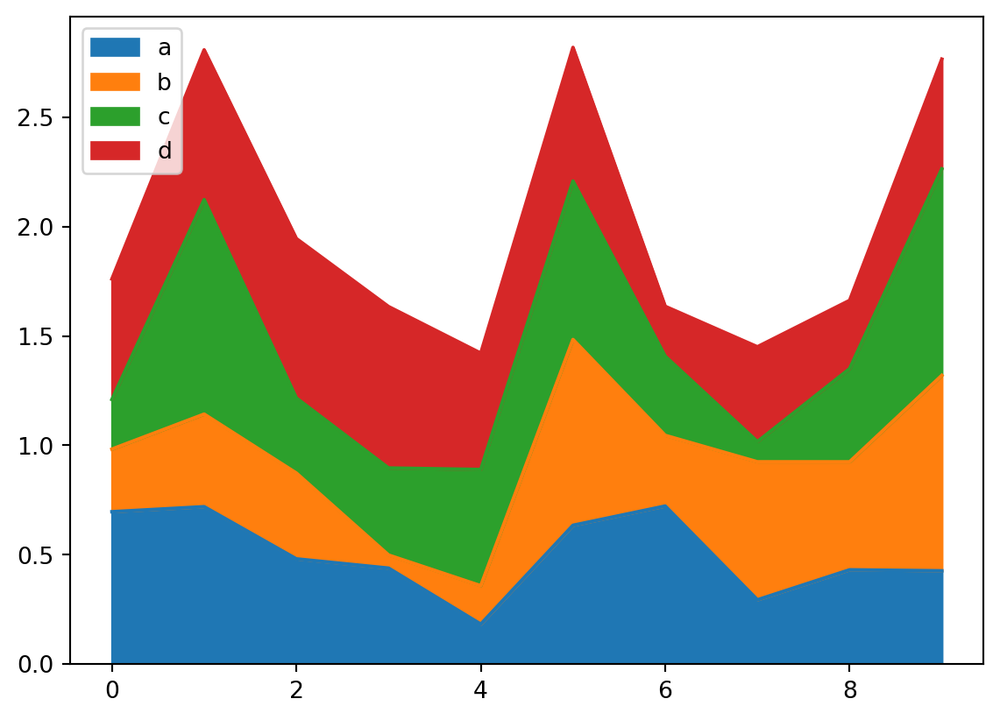
6.23 Wykres pierścieniowy
import matplotlib.pyplot as plt
import numpy as np
np.random.seed(345)
data = np.random.randint(20, 100, 6)
total = sum(data)
data_per = data / total * 100
explode = (0.2, 0, 0, 0, 0, 0)
plt.pie(data_per, explode=explode, labels=[round(i, 2) for i in list(data_per)])
circle = plt.Circle((0, 0), 0.7, color='white')
p = plt.gcf()
p.gca().add_artist(circle)
plt.show()6.24 Wykresy w przestrzeni
6.24.1 Helisa
\[\begin{cases} x=a\cos (t) \\ y=a\sin(t) \\ z=at \end{cases}\]
import numpy as np
import matplotlib.pyplot as plt
fig = plt.figure()
ax = plt.axes(projection='3d')
t = np.linspace(0, 15, 1000)
a = 3
xline = a * np.sin(t)
yline = a * np.cos(t)
zline = a * t
ax.plot3D(xline, yline, zline)
plt.show()6.24.2 Torus
\[p(\alpha,\ \beta)=\Big((R+r\cos \alpha)\cos \beta,\ (R+r\cos \alpha)\sin \beta,\ r\sin \alpha\Big)\]
import numpy as np
import matplotlib.pyplot as plt
fig = plt.figure()
ax = plt.axes(projection='3d')
r = 1
R = 5
alpha = np.arange(0, 2 * np.pi, 0.1)
beta = np.arange(0, 2 * np.pi, 0.1)
alpha, beta = np.meshgrid(alpha, beta)
x = (R + r * np.cos(alpha)) * np.cos(beta)
y = (R + r * np.cos(alpha)) * np.sin(beta)
z = r * np.sin(alpha)
ax.plot_wireframe(x, y, z)
plt.show()Źródło:
- https://www.geeksforgeeks.org/bar-plot-in-matplotlib/
- Dokumentacja https://matplotlib.org/
- https://datatofish.com/plot-histogram-python/
- https://jakevdp.github.io/PythonDataScienceHandbook/04.12-three-dimensional-plotting.html